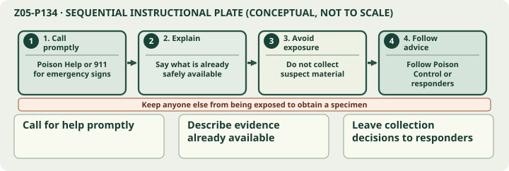

Z05-P134 · Wild foods and poisonous lookalikes · New manuscript
Retaining Uneaten Plant or Mushroom Specimens for Expert Identification
Preserve remaining uneaten plant or mushroom pieces safely in breathable paper so Poison Control mycologists and botanists can guide hospital treatment.
When it applies · Immediately following any suspected toxic plant, berry, root, or wild mushroom ingestion.
Equipment · Clean dry paper bag or wax paper, pen for time/site label (never sealed plastic).

Actions
- Collect any remaining uneaten raw or cooked pieces, trimmings, or intact companion specimens from the exact patch—keeping different species in separate clean dry paper bags or wax paper (never sealed plastic, which rots fungi rapidly into unidentifiable mush).[B08, B09]
- Take clear close-up photos of cap/gills/stem-base or leaves/berries/roots with a ruler if still at the site so a regional Poison Control volunteer mycologist or botanist can review them immediately.[B02, B05, B08]
- Bring the labeled paper-wrapped specimens directly to the emergency department and notify Poison Control (1-800-222-1222) so identification never delays emergency stabilization.[B08, B09]
Failure recognition · Throwing away kitchen trimmings or sealing damp mushrooms in a zip-top plastic bag destroys crucial diagnostic clues clinicians need.[B08]
Verify · Intact uneaten pieces sit labeled in dry paper bags and accompany the patient alongside exact ingestion-time notes.[B08, B09]
Stop or change course · Stop delaying emergency transport to hunt for extra samples; if the patient shows breathing trouble, seizures, collapse, or confusion, call 911 immediately.[B09, M01]
Evidence and editorial notes
- B02 · Bell Museum (UMN) · Bell Museum Specimen Collections Portal (Current web edition)
- Section: Curated herbarium and fungarium voucher specimen standards · Conditions: Corroborating species traits against documented physical vouchers
Support: Curated herbarium and fungarium vouchers link accepted scientific names, collection locality, habitat, and morphology to verifiable specimens.
Limitations: Image-search labels and crowd-sourced guesses cannot substitute for vouchered keys and qualified taxonomic review. · Conflicting evidence: None noted.
Editorial note: Core P19-A voucher discipline. · Specialist reviewer: Herbarium / fungarium curator
Primary source · checked 2026-11-25 - B05 · MyCoPortal · North American Fungal Voucher Collections Portal (Current web edition)
- Section: Separate fungal voucher collections and microscopic/macro traits · Conditions: Documenting macrofungi across North American collections
Support: Fungal taxonomy requires distinct anatomical schemas (cap, gills/pores/teeth, attachment, ring, volva, spore print, substrate, and often microscopy).
Limitations: Fungal species complexes frequently overlap macroscopically; photos alone cannot confirm edibility. · Conflicting evidence: None noted.
Editorial note: Keeps botanical and fungal schemas separate. · Specialist reviewer: Qualified mycologist
Primary source · checked 2026-11-25 - B08 · North American Mycological Association · Mushroom Poisoning Syndromes Reference (Current web edition)
- Section: Mushroom poisoning syndrome classes and specimen retention · Conditions: Evaluating suspected wild fungal exposure
Support: Mushroom toxins span distinct syndromes (amatoxins, gyromitrin, orellanine, muscarine, ibotenic acid, GI irritants) with onset from minutes to days.
Limitations: Save remaining uneaten mushroom pieces in a paper bag (not sealed plastic) for mycologist identification if exposure occurs, and call Poison Control immediately. · Conflicting evidence: None noted.
Editorial note: Grounds Z05 fungal toxicology & emergency referral. · Specialist reviewer: Mycology toxicology reviewer
Primary source · checked 2026-11-25 - B09 · Minnesota Poison Control System · Poison Help 1-800-222-1222 and Regional Plant/Mushroom Guidance (Current web edition)
- Section: Minnesota Poison Control 1-800-222-1222 immediate referral · Conditions: Any suspected toxic plant, berry, root, or mushroom ingestion or severe dermal exposure
Support: Call 1-800-222-1222 immediately (or 911 for breathing difficulty, collapse, seizures, or altered alertness); do not wait for delayed symptoms.
Limitations: Never induce vomiting or administer home remedies unless explicitly instructed by Poison Control or EMS. · Conflicting evidence: None noted.
Editorial note: Mandatory Z05 poison-response escalation. · Specialist reviewer: Clinical toxicologist / Poison Center
Primary source · checked 2026-11-25 - M01 · American College of Surgeons · STOP THE BLEED Training Course (current web edition)
- Section: Ensure Your Own Safety; Find Life-Threatening Bleeding; Compress · Conditions: Lay responder encountering severe external hemorrhage
Support: Ensure scene safety first, call 911, expose the wound to locate life-threatening bleeding, and apply firm continuous direct pressure with clean gauze or cloth.
Limitations: Does not replace formal hands-on Stop the Bleed training or EMS trauma care. · Conflicting evidence: None across ACS/ARC guidelines.
Editorial note: Separates life-threatening arterial/venous hemorrhage from minor scrapes. · Specialist reviewer: Wilderness medicine and trauma EMS
Primary source · checked 2026-11-24
Source lineage · New manuscript (Z05 P19-C clinical workflow) · Classification · New manuscript.